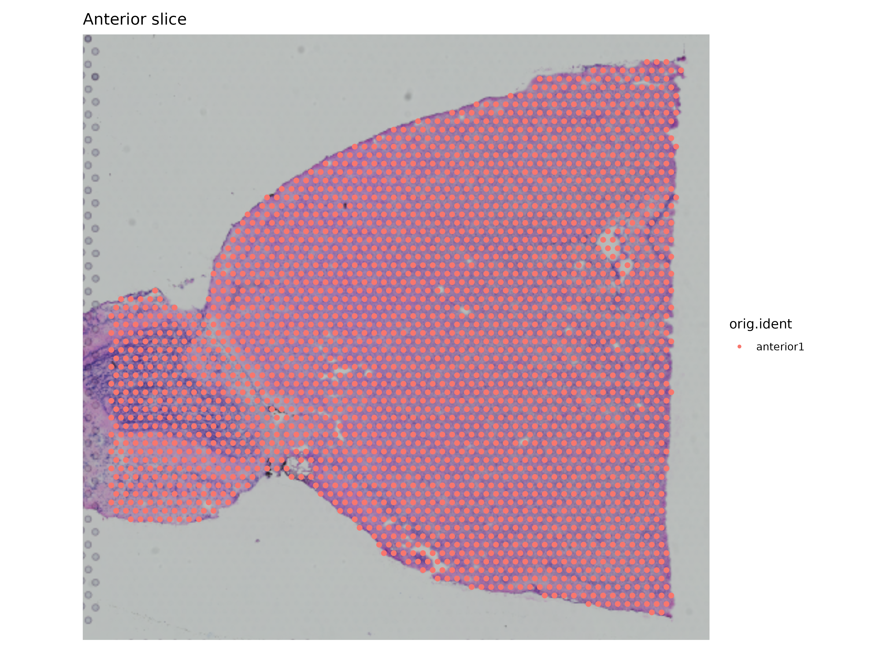
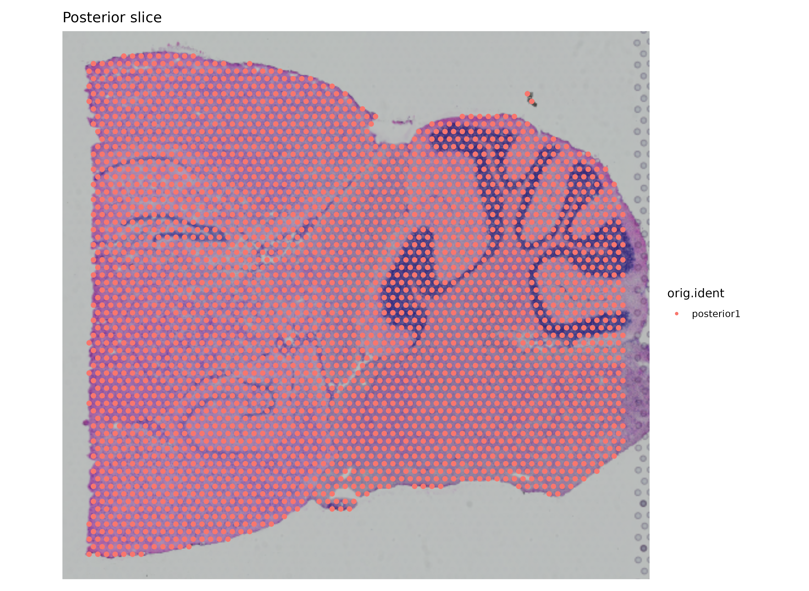
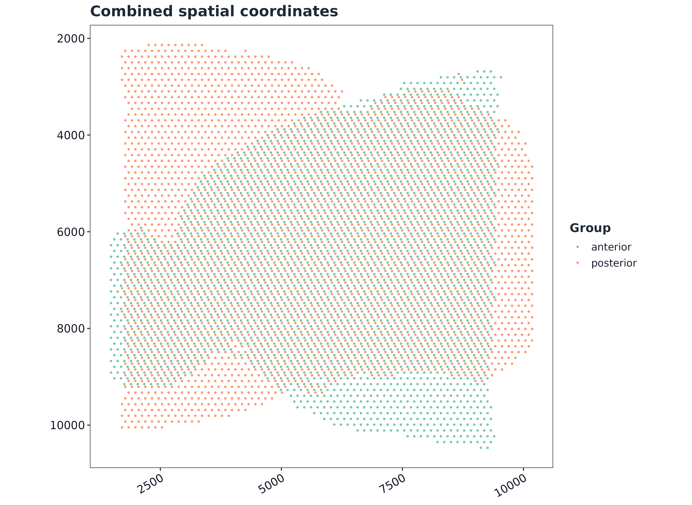
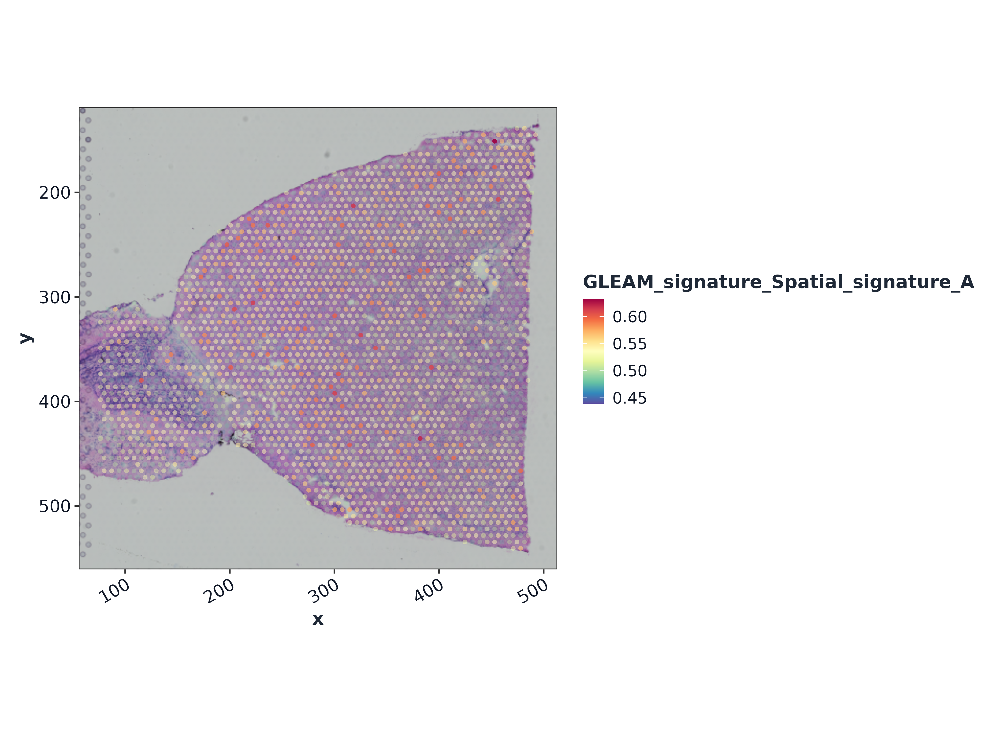
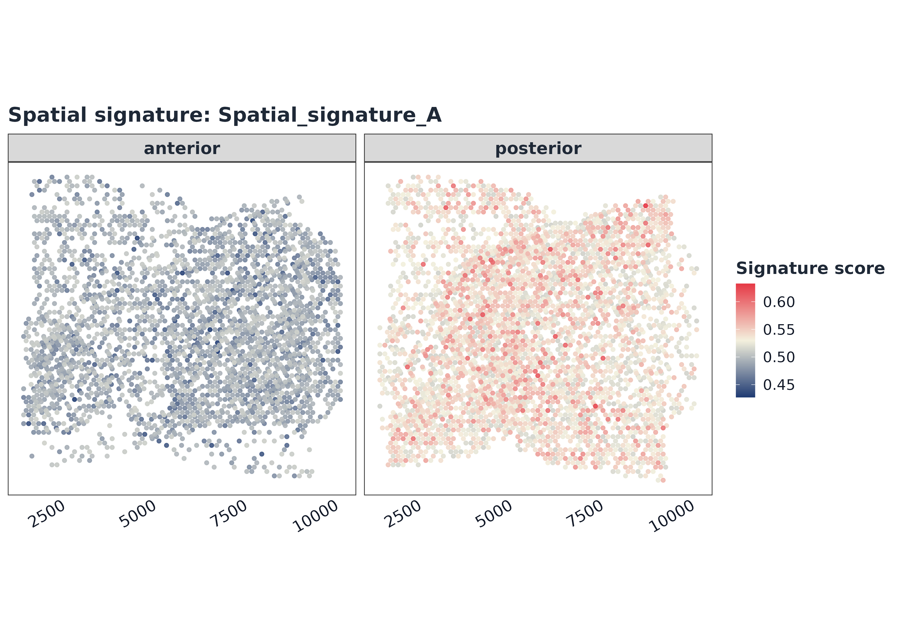
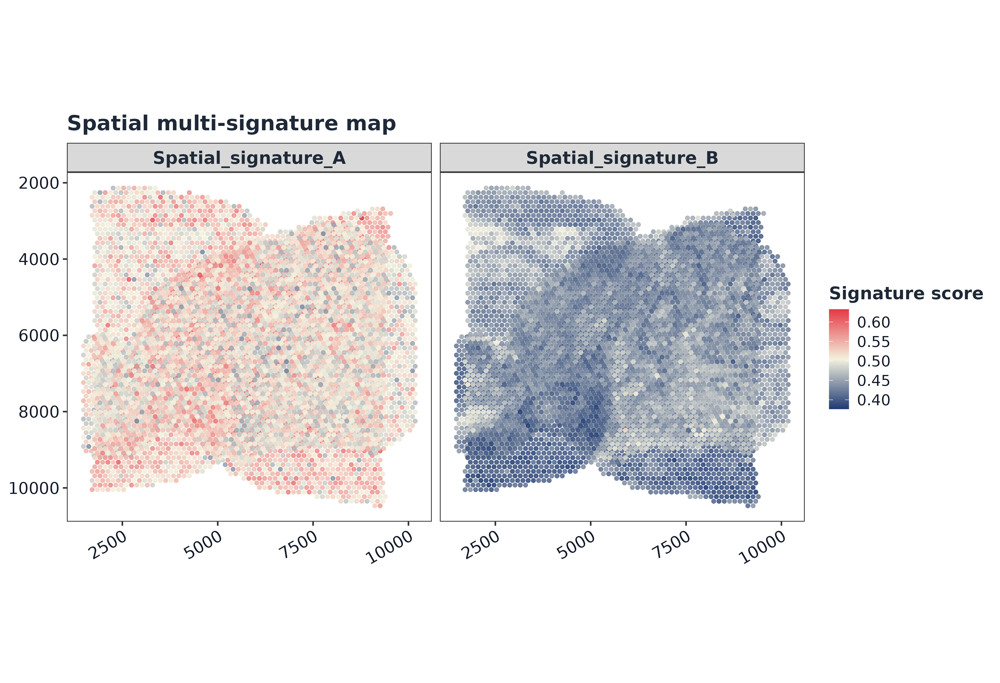
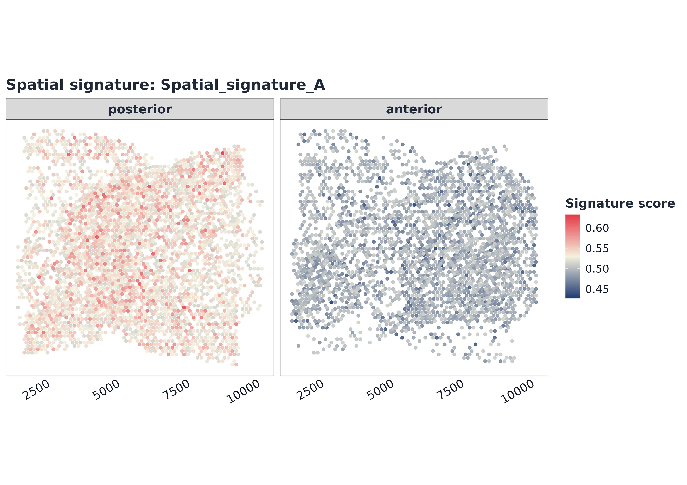
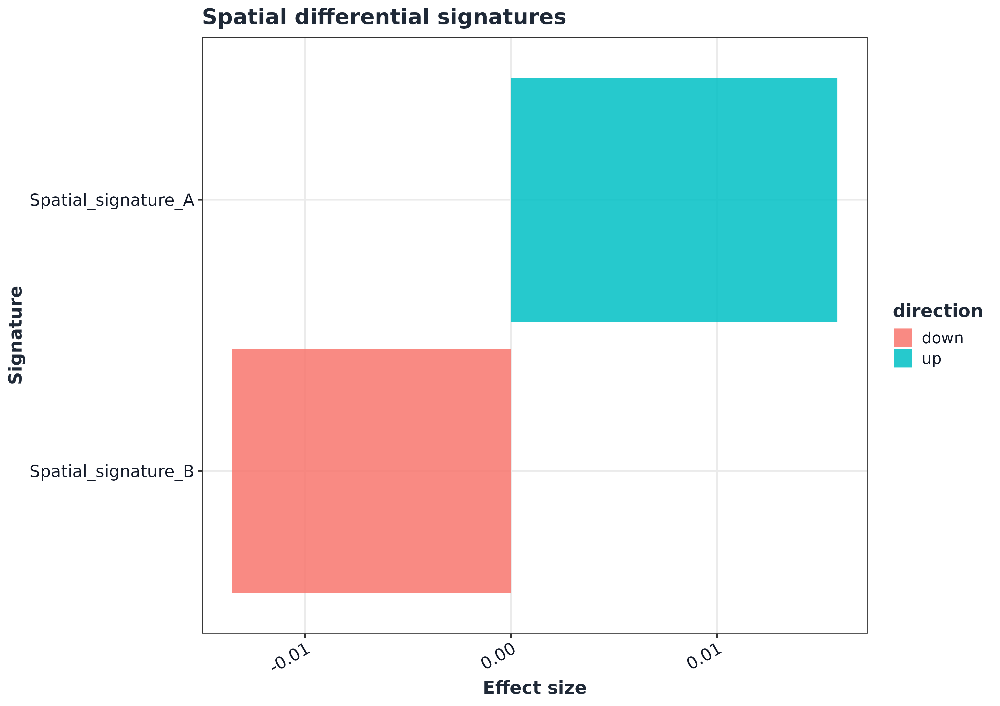
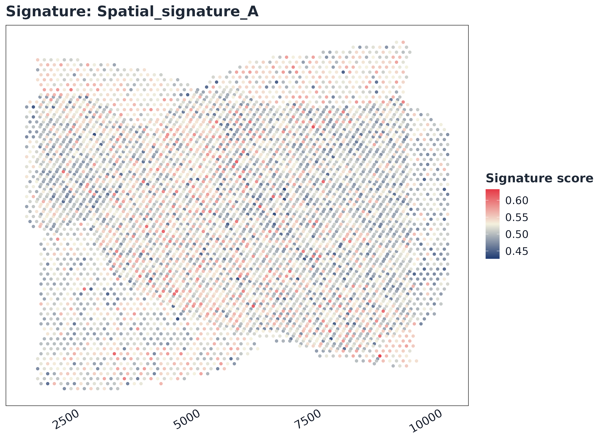
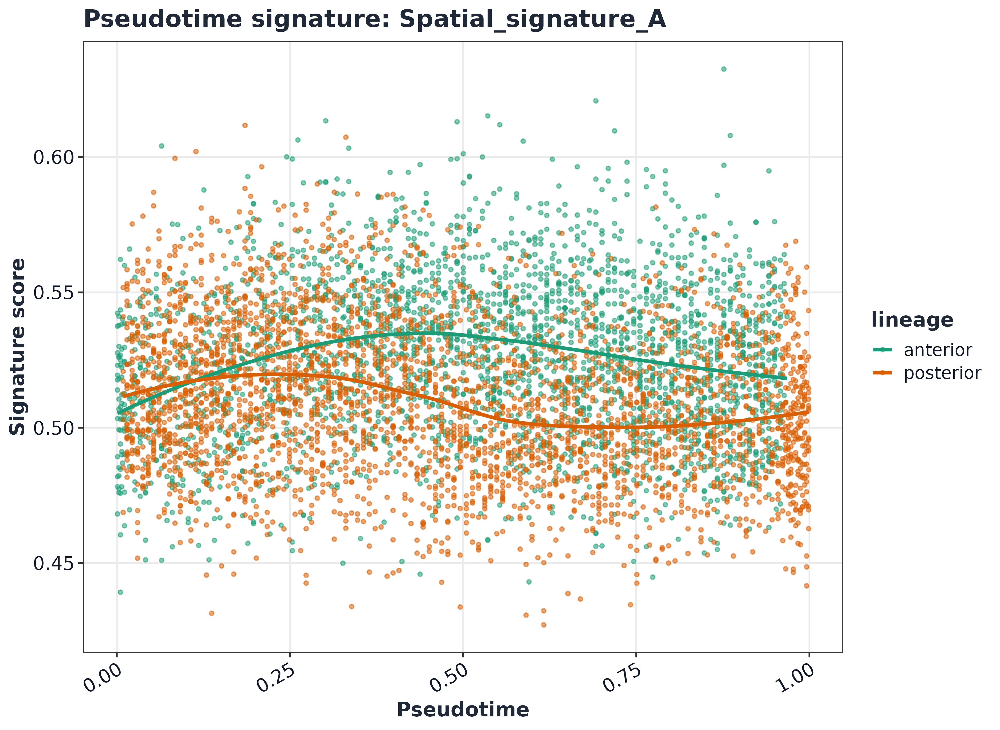

GLEAM full spatial transcriptomics workflow
Source:vignettes/GLEAM_full_spatial_workflow.Rmd
GLEAM_full_spatial_workflow.Rmd1) Load spatial Seurat objects
library(Seurat)
#> Loading required package: SeuratObject
#> Loading required package: sp
#>
#> Attaching package: 'SeuratObject'
#> The following object is masked from 'package:GLEAM':
#>
#> pbmc_small
#> The following objects are masked from 'package:base':
#>
#> intersect, t
a1_path <- system.file("extdata", "full_examples", "stxBrain_anterior1_seurat.rds", package = "GLEAM")
p1_path <- system.file("extdata", "full_examples", "stxBrain_posterior1_seurat.rds", package = "GLEAM")
if (a1_path == "") a1_path <- file.path("inst", "extdata", "full_examples", "stxBrain_anterior1_seurat.rds")
if (p1_path == "") p1_path <- file.path("inst", "extdata", "full_examples", "stxBrain_posterior1_seurat.rds")
sp_a1 <- readRDS(a1_path)
sp_p1 <- readRDS(p1_path)
sp_a1 <- tryCatch(SeuratObject::UpdateSeuratObject(sp_a1), error = function(e) sp_a1)
#> Validating object structure
#> Updating object slots
#> Ensuring keys are in the proper structure
#> Ensuring keys are in the proper structure
#> Ensuring feature names don't have underscores or pipes
#> Updating slots in Spatial
#> Updating slots in anterior1
#> Warning: Not validating Centroids objects
#> Updated Centroids object 'centroids' in FOV 'anterior1'
#> Updated boundaries in FOV 'anterior1'
#> Validating object structure for Assay5 'Spatial'
#> Validating object structure for VisiumV2 'anterior1'
#> Object representation is consistent with the most current Seurat version
sp_p1 <- tryCatch(SeuratObject::UpdateSeuratObject(sp_p1), error = function(e) sp_p1)
#> Validating object structure
#> Updating object slots
#> Ensuring keys are in the proper structure
#> Ensuring keys are in the proper structure
#> Ensuring feature names don't have underscores or pipes
#> Updating slots in Spatial
#> Updating slots in posterior1
#> Warning: Not validating Centroids objects
#> Updated Centroids object 'centroids' in FOV 'posterior1'
#> Updated boundaries in FOV 'posterior1'
#> Validating object structure for Assay5 'Spatial'
#> Validating object structure for VisiumV2 'posterior1'
#> Object representation is consistent with the most current Seurat version
dim(sp_a1)
#> [1] 31053 2696
dim(sp_p1)
#> [1] 31053 3353
sp_a1
#> An object of class Seurat
#> 31053 features across 2696 samples within 1 assay
#> Active assay: Spatial (31053 features, 0 variable features)
#> 1 layer present: counts
#> 1 spatial field of view present: anterior11b) Spatial preflight validation
imgs_a1 <- tryCatch(names(sp_a1@images), error = function(e) character())
imgs_p1 <- tryCatch(names(sp_p1@images), error = function(e) character())
cat("anterior images:", paste(imgs_a1, collapse = ", "), "\n")
#> anterior images: anterior1
cat("posterior images:", paste(imgs_p1, collapse = ", "), "\n")
#> posterior images: posterior1
coords_a1_check <- tryCatch(GLEAM:::extract_spatial_coords(object = sp_a1), error = function(e) e)
coords_p1_check <- tryCatch(GLEAM:::extract_spatial_coords(object = sp_p1), error = function(e) e)
if (inherits(coords_a1_check, "error")) stop("anterior coordinate extraction failed: ", conditionMessage(coords_a1_check))
if (inherits(coords_p1_check, "error")) stop("posterior coordinate extraction failed: ", conditionMessage(coords_p1_check))
cat("anterior coords:", nrow(coords_a1_check), "spots\n")
#> anterior coords: 2696 spots
cat("posterior coords:", nrow(coords_p1_check), "spots\n")
#> posterior coords: 3353 spots
if (!all(colnames(sp_a1) %in% rownames(coords_a1_check))) {
miss <- setdiff(colnames(sp_a1), rownames(coords_a1_check))
stop("anterior coordinate alignment failed; missing spots: ", paste(utils::head(miss, 5), collapse = ", "))
}
if (!all(colnames(sp_p1) %in% rownames(coords_p1_check))) {
miss <- setdiff(colnames(sp_p1), rownames(coords_p1_check))
stop("posterior coordinate alignment failed; missing spots: ", paste(utils::head(miss, 5), collapse = ", "))
}2) Native slice view
p_a1 <- tryCatch(
Seurat::SpatialDimPlot(sp_a1, group.by = "orig.ident", pt.size.factor = 1.6),
error = function(e) {
md <- as.data.frame(sp_a1[[]], stringsAsFactors = FALSE)
coords <- tryCatch(
GLEAM:::extract_spatial_coords(object = sp_a1),
error = function(e1) tryCatch(GLEAM:::extract_spatial_coords(meta = md, seurat = FALSE), error = function(e2) NULL)
)
if (!is.null(coords)) {
coords <- as.data.frame(coords, stringsAsFactors = FALSE)
coords <- coords[rownames(md), c("x", "y"), drop = FALSE]
md$x <- as.numeric(coords$x)
md$y <- as.numeric(coords$y)
} else {
md$x <- seq_len(nrow(md))
md$y <- seq_len(nrow(md))
}
col_var <- if ("orig.ident" %in% colnames(md)) "orig.ident" else colnames(md)[1]
ggplot2::ggplot(md, ggplot2::aes(x = .data$x, y = .data$y, color = .data[[col_var]])) +
ggplot2::geom_point(size = 0.55, alpha = 0.9) +
ggplot2::coord_fixed() +
ggplot2::scale_y_reverse() +
ggplot2::labs(
title = "Anterior slice (coordinate fallback)",
subtitle = conditionMessage(e),
x = NULL,
y = NULL,
color = col_var
) +
gleam_theme(base_size = 12)
}
)
p_a1 + ggplot2::labs(title = "Anterior slice")
p_p1 <- tryCatch(
Seurat::SpatialDimPlot(sp_p1, group.by = "orig.ident", pt.size.factor = 1.6),
error = function(e) {
md <- as.data.frame(sp_p1[[]], stringsAsFactors = FALSE)
coords <- tryCatch(
GLEAM:::extract_spatial_coords(object = sp_p1),
error = function(e1) tryCatch(GLEAM:::extract_spatial_coords(meta = md, seurat = FALSE), error = function(e2) NULL)
)
if (!is.null(coords)) {
coords <- as.data.frame(coords, stringsAsFactors = FALSE)
coords <- coords[rownames(md), c("x", "y"), drop = FALSE]
md$x <- as.numeric(coords$x)
md$y <- as.numeric(coords$y)
} else {
md$x <- seq_len(nrow(md))
md$y <- seq_len(nrow(md))
}
col_var <- if ("orig.ident" %in% colnames(md)) "orig.ident" else colnames(md)[1]
ggplot2::ggplot(md, ggplot2::aes(x = .data$x, y = .data$y, color = .data[[col_var]])) +
ggplot2::geom_point(size = 0.55, alpha = 0.9) +
ggplot2::coord_fixed() +
ggplot2::scale_y_reverse() +
ggplot2::labs(
title = "Posterior slice (coordinate fallback)",
subtitle = conditionMessage(e),
x = NULL,
y = NULL,
color = col_var
) +
gleam_theme(base_size = 12)
}
)
p_p1 + ggplot2::labs(title = "Posterior slice")
3) Build matrix + metadata for combined analysis
assay_a1 <- SeuratObject::DefaultAssay(sp_a1)
assay_p1 <- SeuratObject::DefaultAssay(sp_p1)
expr_a1 <- SeuratObject::LayerData(sp_a1, assay = assay_a1, layer = "counts")
expr_p1 <- SeuratObject::LayerData(sp_p1, assay = assay_p1, layer = "counts")
orig_cells_a1 <- colnames(expr_a1)
orig_cells_p1 <- colnames(expr_p1)
colnames(expr_a1) <- paste0("anterior_", orig_cells_a1)
colnames(expr_p1) <- paste0("posterior_", orig_cells_p1)
common_genes <- intersect(rownames(expr_a1), rownames(expr_p1))
expr <- cbind(expr_a1[common_genes, , drop = FALSE], expr_p1[common_genes, , drop = FALSE])
meta_a1 <- as.data.frame(sp_a1[[]], stringsAsFactors = FALSE)
meta_p1 <- as.data.frame(sp_p1[[]], stringsAsFactors = FALSE)
rownames(meta_a1) <- colnames(expr_a1)
rownames(meta_p1) <- colnames(expr_p1)
coords_a1 <- as.data.frame(coords_a1_check, stringsAsFactors = FALSE)
coords_p1 <- as.data.frame(coords_p1_check, stringsAsFactors = FALSE)
coords_a1 <- coords_a1[orig_cells_a1, c("x", "y"), drop = FALSE]
coords_p1 <- coords_p1[orig_cells_p1, c("x", "y"), drop = FALSE]
rownames(coords_a1) <- colnames(expr_a1)
rownames(coords_p1) <- colnames(expr_p1)
meta_a1$sample <- "anterior"
meta_p1$sample <- "posterior"
meta <- rbind(meta_a1[colnames(expr_a1), , drop = FALSE], meta_p1[colnames(expr_p1), , drop = FALSE])
coords <- rbind(coords_a1[colnames(expr_a1), , drop = FALSE], coords_p1[colnames(expr_p1), , drop = FALSE])
common_cells <- Reduce(intersect, list(colnames(expr), rownames(meta), rownames(coords)))
if (length(common_cells) < 50L) {
stop("Too few matched cells between expression matrix and metadata.")
}
expr <- expr[, common_cells, drop = FALSE]
meta <- meta[common_cells, , drop = FALSE]
coords <- coords[common_cells, c("x", "y"), drop = FALSE]
cells_use <- common_cells[seq_len(min(7000L, length(common_cells)))]
meta <- meta[cells_use, , drop = FALSE]
expr <- expr[, cells_use, drop = FALSE]
coords <- coords[cells_use, c("x", "y"), drop = FALSE]
meta$section <- as.character(meta$sample)
meta$group <- as.character(meta$sample)
region_col <- if ("seurat_annotations" %in% colnames(meta)) "seurat_annotations" else if ("region" %in% colnames(meta)) "region" else if ("seurat_clusters" %in% colnames(meta)) "seurat_clusters" else NULL
if (is.null(region_col)) {
meta$region <- "region_1"
} else if (region_col == "seurat_clusters") {
meta$region <- paste0("cluster_", as.character(meta[[region_col]]))
} else {
meta$region <- as.character(meta[[region_col]])
}
meta$x <- as.numeric(coords[rownames(meta), "x"])
meta$y <- as.numeric(coords[rownames(meta), "y"])
meta$pseudotime <- rank(meta$x, ties.method = "average") / nrow(meta)
meta$lineage <- as.character(meta$region)
region_levels <- names(sort(table(meta$region), decreasing = TRUE))
group_levels <- unique(meta$group)
meta$region <- factor(meta$region, levels = region_levels)
meta$group <- factor(meta$group, levels = group_levels)
pal_region <- setNames(get_palette("gleam_discrete", n = length(region_levels), continuous = FALSE), region_levels)
pal_group <- setNames(get_palette("brewer_set2", n = length(group_levels), continuous = FALSE), group_levels)
head(meta[, c("sample", "group", "region", "x", "y")])
#> sample group region x y
#> anterior_AAACAAGTATCTCCCA-1 anterior anterior anterior 8501 7475
#> anterior_AAACACCAATAACTGC-1 anterior anterior anterior 2788 8553
#> anterior_AAACAGAGCGACTCCT-1 anterior anterior anterior 7950 3164
#> anterior_AAACAGCTTTCAGAAG-1 anterior anterior anterior 2099 6637
#> anterior_AAACAGGGTCTATATT-1 anterior anterior anterior 2375 7116
#> anterior_AAACATGGTGAGAGGA-1 anterior anterior anterior 1480 89134) Combined coordinate view
ggplot2::ggplot(meta, ggplot2::aes(x = .data$x, y = .data$y, color = .data$group)) +
ggplot2::geom_point(size = 0.55, alpha = 0.82) +
ggplot2::scale_color_manual(values = pal_group, drop = FALSE) +
ggplot2::coord_fixed() +
ggplot2::scale_y_reverse() +
ggplot2::labs(title = "Combined spatial coordinates", x = NULL, y = NULL, color = "Group") +
gleam_theme(base_size = 12) +
ggplot2::theme(panel.grid = ggplot2::element_blank())
5) Signature scoring
sp_genes <- rownames(expr)
gs <- list(
Spatial_signature_A = unique(sp_genes[seq_len(min(30, length(sp_genes)))]),
Spatial_signature_B = unique(rev(sp_genes)[seq_len(min(30, length(sp_genes)))])
)
sp <- score_signature(
expr = expr,
meta = meta,
geneset = gs,
geneset_source = "list",
seurat = FALSE,
method = "rank",
min_genes = 3,
verbose = FALSE
)
#> Warning in asMethod(object): sparse->dense coercion: allocating vector of size
#> 1.4 GiB
slice_genes <- rownames(sp_a1)
gs_slice <- list(
Spatial_signature_A = intersect(gs$Spatial_signature_A, slice_genes),
Spatial_signature_B = intersect(gs$Spatial_signature_B, slice_genes)
)
sp_slice <- score_signature(
object = sp_a1,
geneset = gs_slice,
geneset_source = "list",
seurat = TRUE,
layer = "counts",
slot = "counts",
method = "rank",
min_genes = 3,
verbose = FALSE
)
dim(sp$score)
#> [1] 2 60496) Slice-level signature map (tissue context)
top_sig <- rownames(sp_slice$score)[1]
plot_spatial_score(
sp_slice,
signature = top_sig,
object = sp_a1,
point_size = 1.7,
alpha = 0.92,
palette = "gleam_continuous"
)
7) Combined spatial score maps
coords <- data.frame(x = meta$x, y = meta$y, row.names = rownames(meta))
plot_spatial_score(
sp,
signature = rownames(sp$score)[1],
coords = coords,
split.by = "section",
point_size = 1.25,
alpha = 0.9,
palette = "gleam_continuous"
)
plot_spatial_multi(
sp,
pathways = rownames(sp$score)[seq_len(min(4, nrow(sp$score)))],
coords = coords,
point_size = 1.15,
alpha = 0.88,
palette = "gleam_continuous"
)
8) Spatial differential analysis
res_group_region <- test_signature(
sp,
region = "region",
group = "group",
sample = "sample",
level = "sample_region",
method = "wilcox"
)
top_sp <- res_group_region$table$pathway[order(res_group_region$table$p_adj)][1]
head(res_group_region$table)
#> pathway comparison_type group1 group2 celltype level
#> 1 Spatial_signature_A pseudobulk anterior posterior <NA> sample_region
#> 2 Spatial_signature_B pseudobulk anterior posterior <NA> sample_region
#> effect_size median_group1 median_group2 diff_median p_value p_adj n_group1
#> 1 0.01585193 0.5261013 0.5102494 0.01585193 NA NA 1
#> 2 -0.01353957 0.4288974 0.4424370 -0.01353957 NA NA 1
#> n_group2 mean_group1 mean_group2 direction
#> 1 1 0.5261013 0.5102494 up
#> 2 1 0.4288974 0.4424370 down
top_sp
#> [1] "Spatial_signature_A"
p1 <- plot_spatial_score(
sp,
signature = top_sp,
coords = coords,
split.by = "region",
point_size = 1.3,
alpha = 0.9,
palette = "gleam_continuous"
)
p2 <- plot_spatial_compare(res_group_region)
p1
p2
9) Embedding-style and pseudotime-style views
emb2 <- as.matrix(meta[, c("x", "y"), drop = FALSE])
rownames(emb2) <- rownames(meta)
colnames(emb2) <- c("Spatial_1", "Spatial_2")
plot_embedding_score(
sp,
signature = rownames(sp$score)[1],
embedding = emb2,
reduction = "umap",
palette = "gleam_continuous"
)
lineage_levels <- unique(as.character(meta$lineage))
pal_lineage <- setNames(get_palette("brewer_dark2", n = length(lineage_levels), continuous = FALSE), lineage_levels)
plot_pseudotime_score(
sp,
signature = rownames(sp$score)[1],
pseudotime = "pseudotime",
lineage = "lineage",
palette = pal_lineage
)